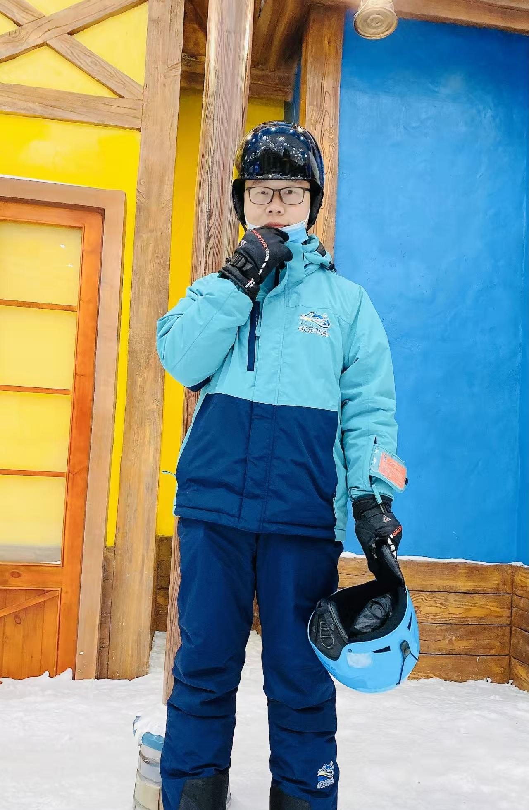

Yuli Sun 孙玉立
|  |
|
 GitHub
GitHub ResearchGate
ResearchGateBiography
I am currently a postdoctor with the College of Aerospace Science and Engineering in NUDT. My research interests cover remote sensing image processing and multitemporal image analysis. I have received several funds, such as the National Natural Science Foundation of China, the Natural Science Foundation of Hunan Province, the China Postdoctoral Science Foundation, and the Postdoctoral Fellowship Program of China Postdoctoral Science Foundation.
News
- (02/2025) One paper Signed Graph based Image Transformation for Heterogeneous Change Detection has been accepted by IEEE TGRS.
- (02/2025) One co-authored paper Enhancing Geolocation Accuracy of High-altitude Airborne SAR through Tropospheric Delay Compensation has been accepted by IEEE TGRS.
- (11/2024) Our Special Issue of Temporal and Spatial Analysis of Multi-Source Remote Sensing Images on Remote Sensing is online.
- (11/2024) One co-authored paper Adaptive Scattering Feature Awareness and Fusion for Limited Training Data SAR Target Recognition has been accepted by IEEE JSTARS.
- (09/2024) One co-authored paper Change detection of multisource remote sensing images: a review has been accepted by IJDE.
- (08/2024) Received funding from the National Natural Science Foundation of China. | 获得国家自然科学基金资助
- (07/2024) One co-authored paper A Review of Optical and SAR Image Deep Feature Fusion in Semantic Segmentation has been accepted by IEEE JSTARS.
- (07/2024) Received funding from the China Postdoctoral Science Foundation. | 获得中国博士后科学基金面上项目资助
- (06/2024) One co-authored paper Simulated Data-Guided Incremental SAR ATR Through Feature Aggregation has been accepted by IEEE JSTARS.
- (05/2024) One paper Locality Preservation for Unsupervised Multimodal Change Detection in Remote Sensing Imagery has been accepted by IEEE TNNLS.
- (05/2024) I am awarded as a Rising Star of Radar. | 🎉 获评 2024年度雷达未来之星
- (03/2024) Received funding from the Natural Science Foundation of Hunan Province of China. | 获得湖南省自然科学基金资助
- (02/2024) One paper Similarity and dissimilarity relationships based graphs for multimodal change detection has been accepted by ISPRS P&RS.
Experience
- Ph.D. in National University of Defense Technology (NUDT)
- M.S. in University of Science and Technology of China (USTC)
- B.S. in Xiangtan University (XTU)
Selected Publications
Awards and Honors
- 2024: Outstanding Doctoral Thesis of PLA | 全军优秀博士学位论文
- 2024: Rising Star of Radar, Journal of Radars | 雷达未来之星
- 2024: Outstanding Doctoral Thesis of NUDT | 国防科技大学优秀博士学位论文
- 2023: Best Report Award of the Third Doctoral Symposium of Radar Journal | 第三届雷达学报博士论坛最佳学术报告
- 2022: First Class Excellence Scholarship, NUDT | 国防科技大学一等优秀奖学金
- 2021: Zhou Mingxi Scholarship, NUDT | 国防科技大学周明鸂奖学金
- 2019: First Prize of the Third National High Score Software Competition | 第三届“中科星图杯”全国高分软件大赛一等奖
Invited Talks
- 2024/05: Talk at Radar Future Stars Academic Presentation
- 2023/10: Talk at the Third Doctoral Symposium of Radar Journal
Services
Peer Review:
- IEEE TPAMI, TIP, TNNLS, TGRS, TRS, TCSVT, TETCI, TASL, JSTARS, GRSL...
- RSE, ISPRS P&RS, PR, Infu, JAG...
Editor:
- Remote Sensing
- Information